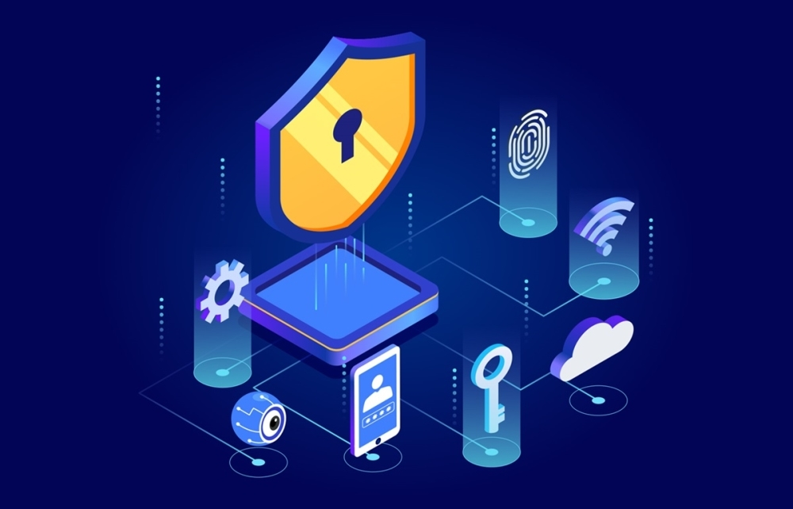

INTRODUCTION
나를 소개합니다
평소 게임 개발에 관심이 있어 유튜브 강의를 따라 만들어 보았지만, 끝까지 완성하지 못한 아쉬움이 남았습니다. 선배와의 대화를 계기로 정보보안에도 관심을 갖게 되었습니다.
사용 경험: Python · C · HTML · CSS
방학 학습 목표
게임 개발과 정보보안 학습
종강 후 1~2개월 동안 주 2일 이상 꾸준히 공부하며, 장르가 다른 게임 2개를 끝까지 완성하는 것이 첫 번째 목표입니다. 게임을 만들면서 입력 검증이나 데이터 저장 방식 같은 기본 보안 개념도 살펴보고, 보안 기초 이론도 병행해 학습하겠습니다.
학습 기록과 다음 목표
학습 내용은 노션에 매주 정리하고 GitHub에 꾸준히 커밋해 성장 과정을 기록하겠습니다. 따라 하기에 그치지 않고 스스로 끝까지 완성하는 경험을 쌓아 실력을 한 단계 높이겠습니다.
